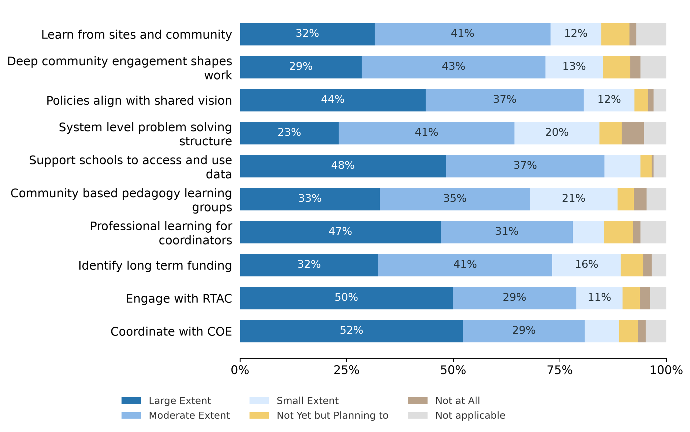
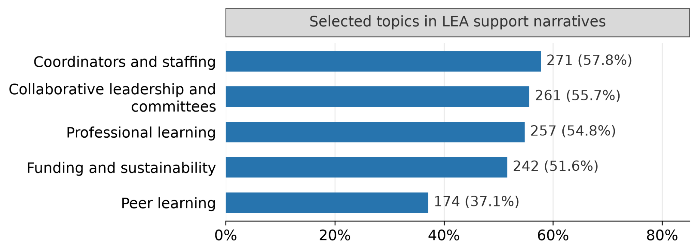
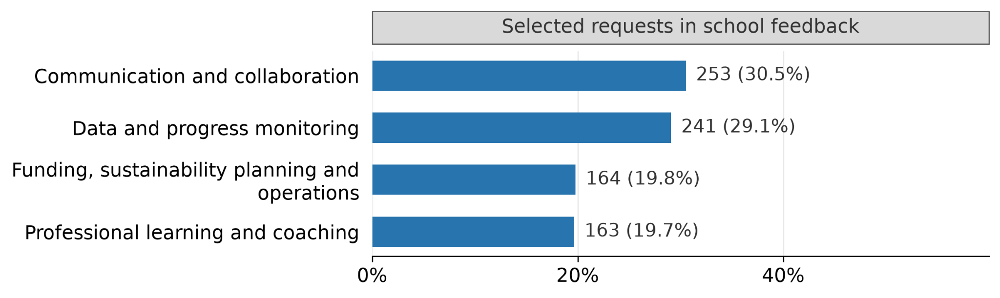
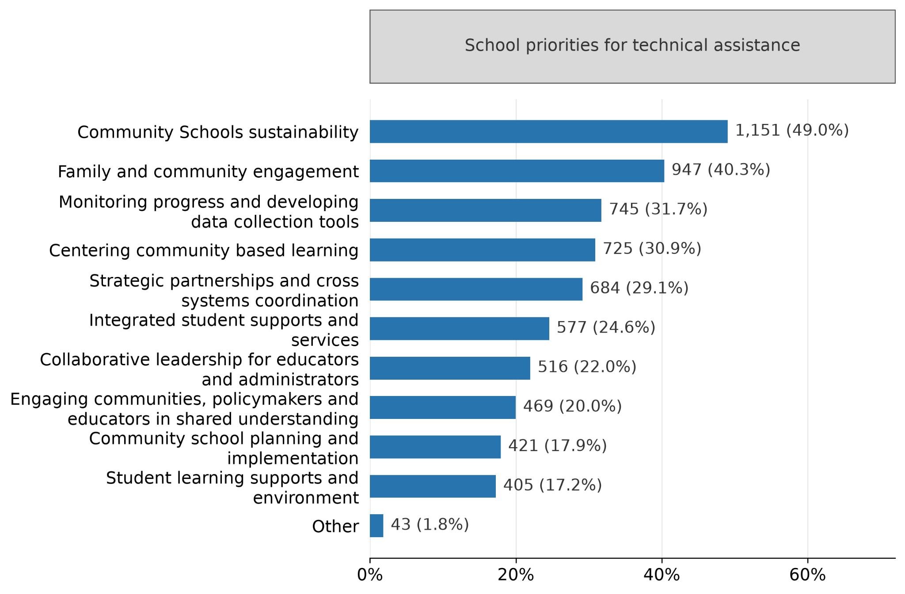
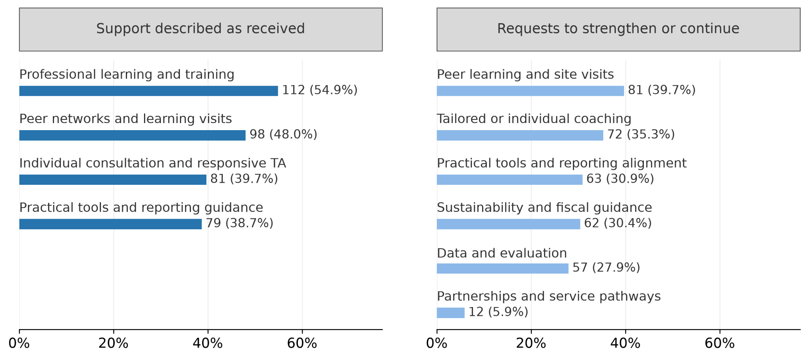
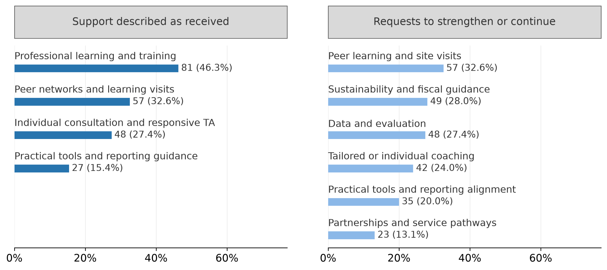

How are sites, LEAs, COEs, and R-TACs working together to support community school implementation?
Overview of the System of Support and Coordination in 2025–26
The 2025–26 Annual Progress Reports describe an established set of support relationships among school sites, Local Educational Agencies (LEAs), County Offices of Education (COEs), and Regional Technical Assistance Centers (R-TACs). Training, peer learning, and implementation guidance are visible strengths. The next challenge is making those relationships consistently useful for day-to-day implementation: helping teams interpret evidence, resolve operational barriers, and sustain the people and practices that support students and families.
This section brings together 497 LEA reporting entities and 2,381 school-site submissions. It examines systems-level activities, LEA support to sites, and LEA feedback on R-TAC and COE assistance, alongside school priorities for technical assistance (TA) and school feedback on LEA support. These perspectives identify improvement priorities; they do not establish TA effectiveness or a matched comparison of LEAs and their schools.
Systems-Level Activities Reported by LEAs
LEAs most often reported supporting schools to access and use data to a large or moderate extent (425 of 497, 85.5%). Coordination with COEs (402, 80.9%) and engagement with R-TACs (392, 78.9%) were also widely reported. Establishing a system-level problem-solving structure was less common (320, 64.4%), as were learning groups focused on community-based pedagogy (338, 68.0%). The pattern suggests a useful improvement focus: connect existing relationships and resources to dependable routines for identifying a problem, trying a response, reviewing evidence, and adjusting practice.

LEA APR, systems-level activities; n=497 except policy alignment, n=496. Full response distributions include not applicable. Percentages describe self-reported extent.
LEA Support for School Site Implementation
LEA narratives described the organizational conditions that help school sites implement the Community Schools strategy. Coordination or staffing appeared in 271 responses (57.8%), collaborative leadership or committees in 261 (55.7%), professional learning in 257 (54.8%), funding or sustainability in 242 (51.6%), and peer learning in 174 (37.1%). These are overlapping topics within the narratives, including practices and plans, rather than verified rates of support delivery or adequacy.

LEA APR, support for school site implementation; n=469 substantive responses. Rule-based topic mentions include practices and plans; themes overlap and do not measure support adequacy.
The accounts suggest that LEAs contribute most directly when they connect school teams to decision-makers, departments, and resources. Weekly facilitator meetings, individual coaching, principal meetings, and coordination with attendance, health, food service, and student service departments provided ways to bring implementation concerns into district routines. One LEA explained:
This matters because implementation is strongest at sites where principals understand the strategy, empower their Community School Facilitator, and connect the work to existing site priorities.
The implication is that coordinator support and principal engagement need to develop together; a coordinator can identify a barrier, but often needs leadership and departmental action to resolve it.
School accounts illustrate how these arrangements can be experienced locally. One site described monthly meetings bringing together leadership assistants, family engagement specialists, and clinicians, as well as LEA participation in site meetings:
In addition, LEA representatives regularly attended site implementation meetings to provide guidance, coaching, and technical assistance aligned to our school’s goals and identified needs.
The value of this support lay in its connection to the school’s own goals and needs. Common district routines can make assistance more consistent while preserving room for schools to respond to their communities.
School Feedback on LEA Support
School feedback described useful LEA support and opportunities to make it more practical. A conservative, rule-assisted review identified communication or collaboration in requests to strengthen or continue support in 253 responses (30.5%), data or progress monitoring in 241 (29.1%), funding, sustainability planning or operations in 164 (19.8%), and professional learning or coaching in 163 (19.7%). These selected themes are shown below. They include requests to continue valued assistance and should not be interpreted as dissatisfaction rates.

School APR, feedback on LEA support; n=829 substantive optional responses. Conservative rule-assisted request coding; selected themes overlap. Requests can seek continuation of valued support.
Several accounts made the implementation problem more specific than a request for “more support.” Sites described wanting shared tools for tracking referrals, participation, services, and outcomes; clearer communication about expectations; protected collaboration time; and assistance that fits the experience of site staff. One school wrote:
Sites need practical ways to measure engagement, services, participation, student outcomes, and partner effectiveness without creating ten different spreadsheets that eventually become digital junk drawers.
This request points to the usability of local evidence: collecting information is more sustainable when school teams can use a small number of connected tools to answer their own improvement questions.
Other accounts located barriers in district operations. Schools described unclear spending guidance, delayed approvals or vendor payments, and uncertainty about staffing beyond the grant. A school stated:
It would be very beneficial to have more access to the budget to help inform our decisions as a site.
These examples suggest that LEA improvement should include the processes through which sites obtain resources and make decisions, alongside professional learning. The 829 substantive responses represent 34.8% of all site submissions, so these findings describe the schools that chose to provide feedback, not the prevalence of unmet needs across all grantees.
School Priorities for Technical Assistance
Community Schools sustainability was the most frequently selected TA priority (1,151 schools, 49.0%), followed by family and community engagement (947, 40.3%). Monitoring progress and developing data collection tools (745, 31.7%), centering community-based learning (725, 30.9%), and strategic partnerships and cross-systems coordination (684, 29.1%) were also prominent. The question asked schools to select three areas; selections indicate relative interest within the offered choices, rather than the severity of a problem.

School APR, technical assistance priorities; n=2,348 selecting at least one priority. Multiple selections; percentages do not sum to 100. Labels are shortened; 2,088 schools selected exactly three.
These priorities call for assistance that connects organizational capacity with what schools are trying to accomplish. Sustainability work can address the staffing, funding, and routines needed to maintain family engagement and student supports. Data assistance can help schools judge whether those activities reach intended students and families and inform decisions about continuation or adjustment. Community-based learning deserves a distinct place in the TA agenda: nearly one-third of respondents selected it, while LEAs reported comparatively less extensive work to organize learning groups around this practice. The two items are not matched measures, but together they identify an area for closer attention.
Forty-three schools selected “Other”; 16 supplied text. Those comments included grant writing, family literacy, working with the district office, and improving APR usability. The small and varied set offers examples for follow-up rather than an additional statewide ranking.
Regional Technical Assistance Center Support
LEAs described R-TACs as sources of professional learning, peer exchange, responsive consultation, and practical implementation guidance. Explicit descriptions of assistance received included professional learning in 112 responses (54.9%), peer networks or learning visits in 98 (48.0%), individual consultation or responsive help in 81 (39.7%), and practical tools or reporting guidance in 79 (38.7%). Figure 5 presents these descriptions together with requests for further support.

LEA APR, Regional Technical Assistance Center support; n=204 substantive optional responses. Left: selected themes in received support. Right: six request themes. Themes overlap; panels are not a net service-gap measure.
A review of TA requests identified peer learning or site visits in 81 responses (39.7%), tailored coaching in 72 (35.3%), practical tools or reporting alignment in 63 (30.9%), sustainability or fiscal guidance in 62 (30.4%), and data or evaluation support in 57 (27.9%). The coexistence of received support and requests for similar assistance suggests a desire to deepen and adapt established services. One LEA described R-TAC coaching that produced a shared tool for tracking work across four grants, illustrating how TA can help reduce fragmentation around a specific implementation task.
Accessibility also shapes whether assistance reaches its intended users. A small rural LEA proposed:
RTAC support could be strengthened for small and rural LEAs by offering shorter recorded trainings, concise written summaries, sample completed documents, and individual consultation appointments that do not require attendance at recurring meetings.
For R-TACs, the findings support a combination of accessible regional learning and more targeted assistance organized around implementation stage, role, and local context. Peer exchanges become more useful when participants leave with a practice to try, receive follow-up support, and return with evidence of what happened at their own sites.
County Office of Education Support
COE narratives described both learning opportunities and connections to local implementation resources. Descriptions of assistance received included professional learning in 81 responses (46.3%), peer networks or learning visits in 57 (32.6%), individual consultation or responsive help in 48 (27.4%), and practical tools or reporting guidance in 27 (15.4%). These are identified descriptions in optional narratives, not a complete inventory of county services. County and regional roles sometimes overlap, so the two sets of counts should not be added or used to rank TA providers.

LEA APR, County Office of Education support; n=175 substantive optional responses. Left: selected themes in received support. Right: six request themes. Counts describe respondents and do not rank provider effectiveness.
Continuity of support was particularly valuable in accounts from smaller organizations. One single-school LEA described summer professional learning followed by repeated on-site assistance, stating:
[The COE’s] engagement has helped reduce that isolation and strengthened our capacity to coordinate services, engage families, and align our work with the community schools framework.
Other accounts described limited outreach or a need for an identifiable contact. Taken together, the narratives suggest that a county relationship is most useful when LEAs can obtain assistance over time and connect that assistance to local service networks, rather than depending on an isolated event.
Requests included peer learning (57, 32.6%), sustainability or fiscal guidance (49, 28.0%), data or evaluation (48, 27.4%), tailored coaching (42, 24.0%), and partnership or service pathways (23, 13.1%). A rural LEA explained:
Continued assistance with shared data definitions, countywide referral pathways, professional learning for Community School Site Coordinators and Wellness Coaches, and convening cross-sector partners would strengthen implementation.
This points to a county role in making cross-agency coordination workable: clarifying contacts, connecting referral pathways, helping partners use consistent information, and following up when schools encounter barriers.
Directions for Continuous Improvement
The findings suggest a system with many support structures in place and uneven evidence about how consistently those structures resolve implementation problems. The directions below are recommendations derived from the APR, not responsibilities established by the survey. They connect each level’s contribution to an observable change that could be reviewed with grantees.
| Level | Finding to address | Direction for support | Evidence to review |
|---|---|---|---|
| LEA | Site feedback requests usable data tools, clearer processes, and sustained support. | Protect coordinator and principal collaboration time; align site priorities with district plans; simplify budgeting, purchasing, referrals, and data access. | Review turnaround time for site requests, use of shared tools, and staff judgments of whether support resolved the problem. |
| COE | LEAs seek local connections, continuing consultation, and county service pathways. | Maintain an identifiable point of contact; convene education and service partners around specific barriers; follow through on referrals, data definitions, and resource coordination. | Review unresolved referrals or handoffs, access to county expertise, and whether smaller LEAs can obtain help when needed. |
| R-TAC | LEAs value peer learning and ask for deeper, context-specific assistance. | Combine regional learning with coaching differentiated by stage and context; organize exchanges around concrete problems; follow up on tools and practices tried locally. | Review participation by context, application of learning, and changes teams make after coaching or peer exchange. |
| System as a whole | Sites prioritize sustainability, engagement, data use, and community-based learning. | Agree on a small set of shared TA priorities and clear handoffs among levels; maintain common guidance and calendars; use site feedback to adjust the offer. | Review coverage of priority needs, duplicated requests or reporting, and whether feedback leads to a documented change in support. |